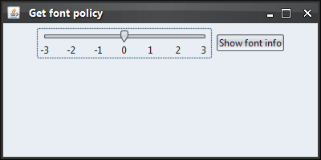
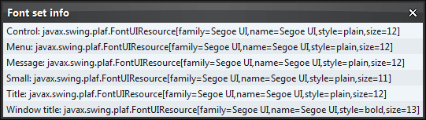
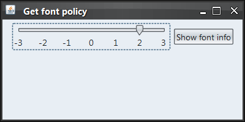
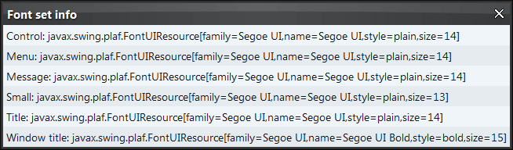
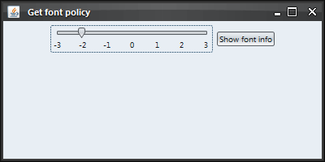
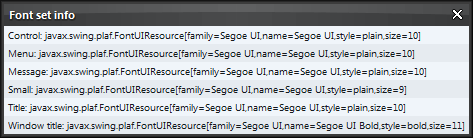

|
import java.awt.*;
import java.awt.event.ActionEvent;
import java.awt.event.ActionListener;
import javax.swing.*;
import javax.swing.event.ChangeEvent;
import javax.swing.event.ChangeListener;
import javax.swing.plaf.FontUIResource;
import org.pushingpixels.substance.api.SubstanceLookAndFeel;
import org.pushingpixels.substance.api.fonts.FontPolicy;
import org.pushingpixels.substance.api.fonts.FontSet;
import org.pushingpixels.substance.api.skin.BusinessBlackSteelSkin;
/**
* Test application that shows the use of the
* {@link SubstanceLookAndFeel#getFontPolicy()} API.
*
* @author Kirill Grouchnikov
* @see SubstanceLookAndFeel#getFontPolicy()
*/
public class GetFontPolicy extends JFrame {
/**
* Wrapper around the base Substance font set. Is used to create larger /
* smaller font sets.
*
* @author Kirill Grouchnikov
*/
private static class WrapperFontSet implements FontSet {
/**
* Extra size in pixels. Can be positive or negative.
*/
private int extra;
/**
* The base Substance font set.
*/
private FontSet delegate;
/**
* Creates a wrapper font set.
*
* @param delegate
* The base Substance font set.
* @param extra
* Extra size in pixels. Can be positive or negative.
*/
public WrapperFontSet(FontSet delegate, int extra) {
super();
this.delegate = delegate;
this.extra = extra;
}
/**
* Returns the wrapped font.
*
* @param systemFont
* Original font.
* @return Wrapped font.
*/
private FontUIResource getWrappedFont(FontUIResource systemFont) {
return new FontUIResource(systemFont.getFontName(), systemFont
.getStyle(), systemFont.getSize() + this.extra);
}
public FontUIResource getControlFont() {
return this.getWrappedFont(this.delegate.getControlFont());
}
public FontUIResource getMenuFont() {
return this.getWrappedFont(this.delegate.getMenuFont());
}
public FontUIResource getMessageFont() {
return this.getWrappedFont(this.delegate.getMessageFont());
}
public FontUIResource getSmallFont() {
return this.getWrappedFont(this.delegate.getSmallFont());
}
public FontUIResource getTitleFont() {
return this.getWrappedFont(this.delegate.getTitleFont());
}
public FontUIResource getWindowTitleFont() {
return this.getWrappedFont(this.delegate.getWindowTitleFont());
}
}
/**
* Creates the main frame for <code>this</code> sample.
*/
public GetFontPolicy() {
super("Get font policy");
this.setLayout(new BorderLayout());
JPanel panel = new JPanel(new FlowLayout());
// create a slider to control the font size.
final JSlider fontSizeSlider = new JSlider(-3, 3, 0);
fontSizeSlider.setPaintLabels(true);
fontSizeSlider.setMajorTickSpacing(1);
fontSizeSlider.setToolTipText("Controls the global font set size");
fontSizeSlider.addChangeListener(new ChangeListener() {
public void stateChanged(ChangeEvent e) {
// if the value is adjusting - ignore. This is done
// to make CPU usage better.
if (!fontSizeSlider.getModel().getValueIsAdjusting()) {
final int newValue = fontSizeSlider.getValue();
SwingUtilities.invokeLater(new Runnable() {
public void run() {
// reset the base font policy to null - this
// restores the original font policy (default size).
SubstanceLookAndFeel.setFontPolicy(null);
// Get the default font set
final FontSet substanceCoreFontSet = SubstanceLookAndFeel
.getFontPolicy().getFontSet("Substance",
null);
// Create the wrapper font set
FontPolicy newFontPolicy = new FontPolicy() {
public FontSet getFontSet(String lafName,
UIDefaults table) {
return new WrapperFontSet(
substanceCoreFontSet, newValue);
}
};
try {
GetFontPolicy.this
.setCursor(Cursor
.getPredefinedCursor(Cursor.WAIT_CURSOR));
// set the new font policy
SubstanceLookAndFeel
.setFontPolicy(newFontPolicy);
GetFontPolicy.this.setCursor(Cursor
.getDefaultCursor());
} catch (Exception exc) {
exc.printStackTrace();
}
}
});
}
}
});
panel.add(fontSizeSlider);
JButton jb = new JButton("Show font info");
jb.addActionListener(new ActionListener() {
public void actionPerformed(ActionEvent e) {
FontPolicy fontPolicy = SubstanceLookAndFeel.getFontPolicy();
FontSet fontSet = fontPolicy.getFontSet("Substance", null);
String[] infoArray = new String[] {
"Control: " + fontSet.getControlFont(),
"Menu: " + fontSet.getMenuFont(),
"Message: " + fontSet.getMessageFont(),
"Small: " + fontSet.getSmallFont(),
"Title: " + fontSet.getTitleFont(),
"Window title: " + fontSet.getWindowTitleFont() };
JList infoList = new JList(infoArray);
JDialog infoDialog = new JDialog(GetFontPolicy.this,
"Font set info", true);
infoDialog.setLayout(new BorderLayout());
infoDialog.add(infoList, BorderLayout.CENTER);
infoDialog.pack();
infoDialog.setLocationRelativeTo(GetFontPolicy.this);
infoDialog.setVisible(true);
}
});
panel.add(jb);
this.add(panel, BorderLayout.CENTER);
this.setSize(400, 200);
this.setLocationRelativeTo(null);
this.setDefaultCloseOperation(JFrame.EXIT_ON_CLOSE);
}
/**
* The main method for <code>this</code> sample. The arguments are ignored.
*
* @param args
* Ignored.
*/
public static void main(String[] args) {
JFrame.setDefaultLookAndFeelDecorated(true);
JDialog.setDefaultLookAndFeelDecorated(true);
SwingUtilities.invokeLater(new Runnable() {
public void run() {
SubstanceLookAndFeel.setSkin(new BusinessBlackSteelSkin());
new GetFontPolicy().setVisible(true);
}
});
}
}
The screenshot below shows application frame under default
font size - this method has not been called:

Here is the listing of all the fonts in the returned (default) font policy:

The screenshot below shows application frame after the font policy that
adds 2 pixels to all fonts has been set (note how it affects all UI elements):

Here is the listing of all the fonts in the returned font policy:

The screenshot below shows application frame after the font policy that
subtracts 2 pixels from all fonts has been set (note how it affects all UI elements):

Here is the listing of all the fonts in the returned font policy:

|